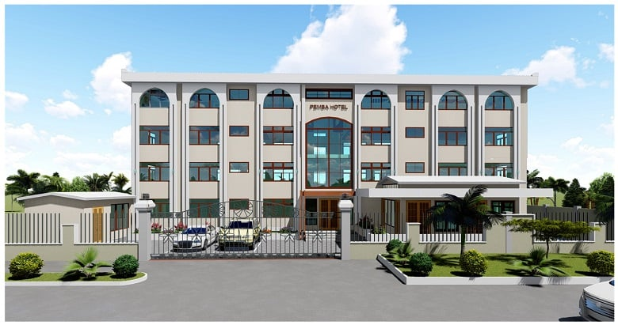
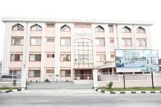
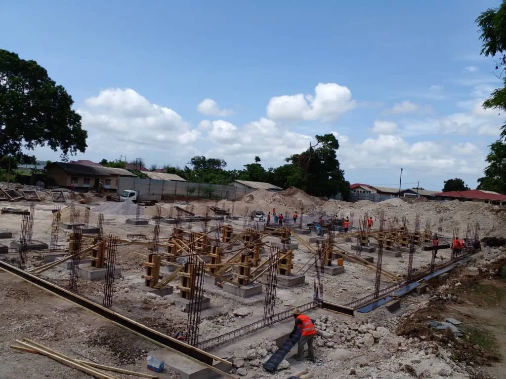

Micheweni, Pemba Island
Micheweni District Hospital
TZS 4.8 billion healthcare facility serving 123,379 people. Benchmark's most complex government project.
Case Study — First Government Commission · Mkoani, Pemba Island · 2020
The project that changed Benchmark's trajectory. In 2020, the Government of Zanzibar entrusted us with our first government commission — the complete transformation of Pemba Hotel. We delivered something extraordinary, and East Africa took notice.
The Challenge
When the Government of Zanzibar came to Benchmark in 2020 with the Mkoani Hotel commission, it was our first opportunity to work directly for the state. The building — Pemba Hotel — was a landmark that had been left to deteriorate badly. Crumbling render, broken infrastructure, interiors that had long since fallen below any standard of use. A building that was an embarrassment where it should have been a point of pride.
The brief was total renovation: structurally, externally, and internally. Not a cosmetic refresh — a complete rebuilding of everything from the facade inward. On a government contract, delivered on a tight programme, on Pemba Island, with every material and piece of plant to be transported across the water. This was not a straightforward job. It was exactly the kind of challenge that Benchmark was built for.
The Government chose Benchmark because of our Class 1 contractor classification, our Pemba Island track record, and our reputation for finishing what we start. We knew that a great result here would open every government door that followed. We delivered something that exceeded all expectations — and the Government commissioned a documentary film to record it.

The Benchmark Approach
Benchmark's approach to the Mkoani Hotel renovation began with a thorough structural assessment before any scope was finalised. Existing conditions were surveyed, deteriorated elements were identified, and a sequenced programme was developed that addressed the structure before any architectural or fit-out work began.
The external transformation was comprehensive — the crumbling facade was completely rebuilt with new render, decorative arched window surrounds, and a clean contemporary finish that restored the building's civic prominence in Mkoani town. The internal works covered all rooms, public areas, corridors, and back-of-house spaces, with new electrical installations, plumbing, and sanitary fit-out throughout.
Benchmark's owned concrete mixing capability and lorry fleet were critical to maintaining supply chain reliability on Pemba Island, where reliance on third-party logistics would have introduced programme risk. All works were completed to Class 1 contractor specification and Government of Zanzibar inspection standards.
The Impact
Government Record
The Government of Zanzibar commissioned this documentary record of the Mkoani Hotel renovation — a before-and-after account of the project from dereliction to completion.
Site Photography




The Mkoani Hotel renovation shows what is possible when a Class 1 contractor with real island experience takes on a complex government brief. The transformation speaks for itself.
Related Work
Micheweni, Pemba Island
TZS 4.8 billion healthcare facility serving 123,379 people. Benchmark's most complex government project.

Ole, Pemba Island
Multi-block secondary school campus opened by the President of Zanzibar in 2024. ZPPDA compliant.
Zanzibar & Pemba Island
Browse all fifty completed projects across six construction disciplines.
Complex renovation demands a contractor with real island experience. Contact us to discuss your project.